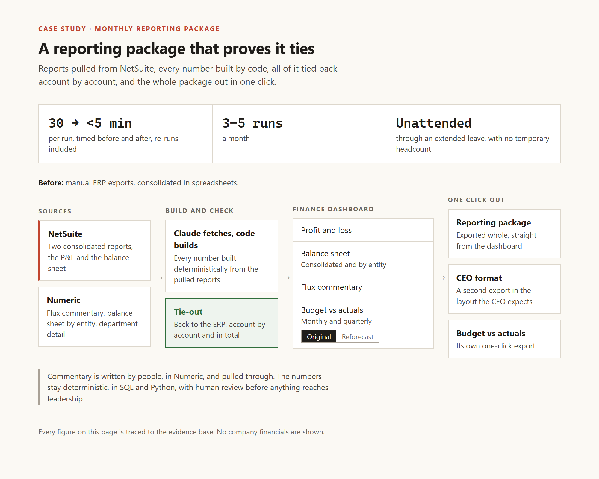
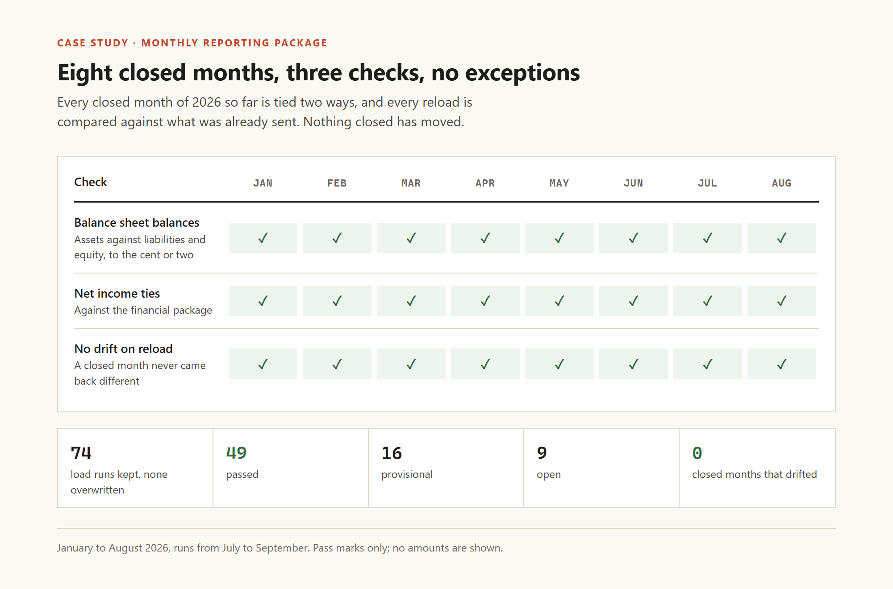

Case study
The thirty-minute re-run
I rebuilt our monthly reporting package so a re-run takes under 5 minutes instead of 30, and every closed month of 2026 ties two ways.
- Role
- Built it. I decided what it had to produce and I check the output against the source data. Claude wrote the code.
- When
- Built in July 2026, moved onto NetSuite reports in September
- Tools
- NetSuite, Numeric, SQL, Python, Claude
- Results
- 30 minutes to under 5 per run (timed) · 8 of 8 closed months tie two ways · no closed-month drift across 74 runs
The problem
Every time we closed a period I'd pull the reports, analyze the numbers and write the commentary, and every time something would have to change.
Any change meant pulling all the reports again and consolidating them again, which took me 30 minutes each time. It happened maybe 2 to 4 times per close, I never actually counted.
So you can imagine what it's like when you thought you were already done and there's pressure to finish and send the package so the CEO can review it.
What I built

I built the dashboard in July 2026, once my ERP and close platform were connected to an AI assistant and the gears started grinding.
- Two NetSuite reports I built for it, one P&L and one balance sheet, so the data pulls cheaply and accurately.
- Claude pulls the reports from the ERP and the code builds every number deterministically.
- 8 views: overview, P&L detail, income statement, balance sheet, balance sheet by entity for our 6 legal entities, adjusted EBITDA, budget vs actuals on both the original budget and the reforecast, and a page for data and runs.
- Commentary is written by people in Numeric's flux reports and pulled in as is.
- The whole package exports in one click, plus a second version in the format the CEO expects.
How I know it works

- At the end everything gets tied back to the ERP, account by account and in total.
- Every closed month so far this year, January to August, ties two ways. Assets equal liabilities plus equity within $0.02, and net income ties to the financial package.
- Every load of a month gets saved as a run instead of overwriting the last one, and a closed month that comes back different on a reload gets flagged. I wanted that so any adjustment shows up against what we already sent.
- From July 22 to September 11 there were 74 runs and no closed month changed on any of them. That also means the drift check hasn't been tested on a real change yet.
Results
- A full run takes me under 5 minutes, against 30 before. I timed both.
- So when something changes after close, I just run it again.
What didn't work
- The first time I tried pulling ERP data through Claude, it burned through my usage allowance really fast because it kept retrying queries it didn't have access to. So I built on Numeric first, then built the two NetSuite reports myself and switched back on September 11.
- I tried having Claude analyze the numbers, find the variances and write the commentary, but it was bad so I reverted it back.
Limits and what's next
- The executive summary section is empty, and the build only carries one summary tagged to one month, so writing them all wouldn't fix it yet.
- The commentary cells can still be edited on the dashboard, and an edit there never goes back to Numeric. They should be read-only.
- The balance sheet is off by up to $0.02 in some months and the check lets it pass. I hate that, it should tie to the penny.
- The overview still says "Numeric consolidated basis" even though the numbers come from NetSuite now.
- Next: rebuilding the prepaid and accrual schedules directly from ERP data so the whole method is deterministic end to end, and wiring the VP of Finance's live reforecast into the dashboard. Both are in progress.
How these numbers are sourced
Parsed from the dashboard itself (built September 18, 2026), through a structural extract with no amounts in it: the 8 views, the 6 entities, 12 months per budget basis, the EBITDA definition, the $0.02 balance check, the net income tie in all 8 months, the 74 runs and their statuses, no drift, the switch to NetSuite reports on September 11, the empty executive summary, the editable commentary cells and the stale overview label.
Timed by me: 30 minutes before, under 5 after. I didn't write either timing down.
My estimate, not a count: 2 to 4 re-runs per close.
My own account: when and why I built it, the drift requirement, where commentary is written, the AI commentary I tried and reverted, the first ERP pull that burned my usage, building the NetSuite reports myself, that Claude pulls the reports while code builds the numbers and ties them account by account, and that Claude writes the code.